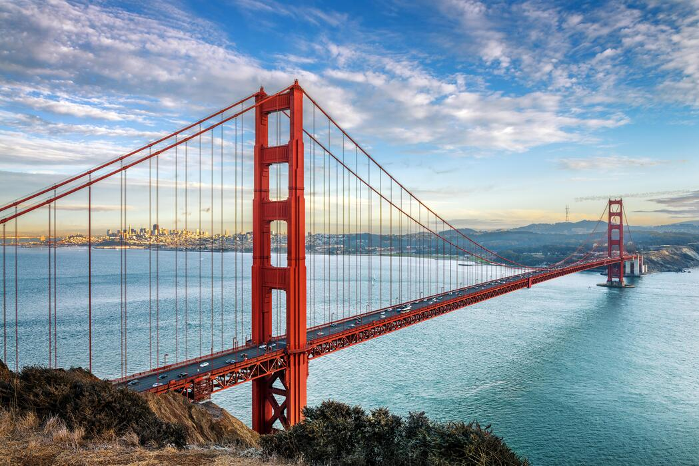
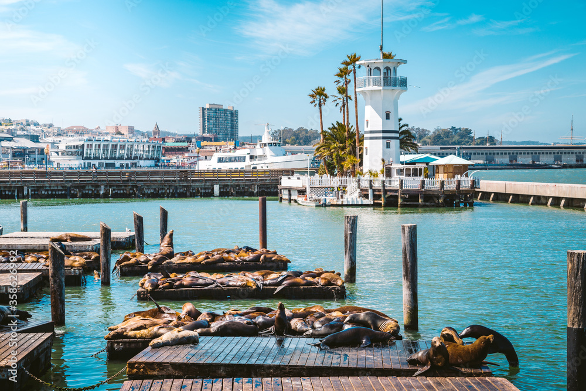
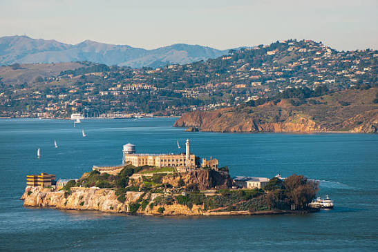
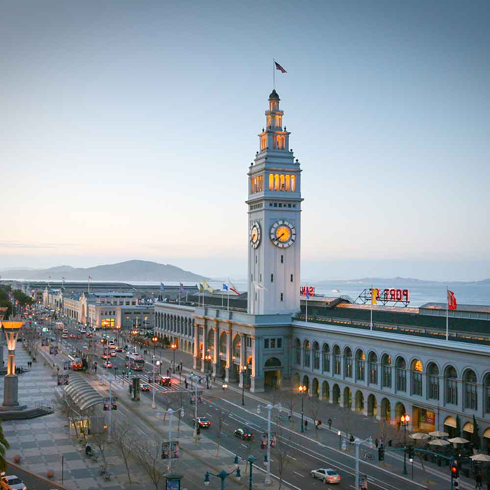

1. Golden Gate Bridge

Jembatan Golden Gate adalah jembatan gantung berwarna jingga khas (International Orange) yang menghubungkan Semenanjung San Francisco di selatan dengan Marin County di Utara. Jembatan ini mulai dibangun pada tanggal 5 Januari 1933 dan resmi dibuka untuk umum pada 27 Mei 1937. Jembatan ini memiliki panjang total sekitar 2,7 hingga 3,2 kilometer, bentang utama sepanjang 1.280 meter, dan tinggi menara mencapai 227 meter di atas permukaan air.
2. Fisherman's Wharf & Pier 39

Fisherman’s Wharf and Pier 39 merupakan destinasi tepi laut yang paling terkenal di San Francisco, yang dikenal dengan hidangan laut, tempat belanja, dan pemandangan teluk yang indah. Terdapat banyak singa laut (sea lions) yang berjemur di atas dok apung menjadi tontonan favorit pengunjung sejak tahun 1990.
3. Pulau Alcatraz

Pulau kecil yang terletak di tengah Teluk San Francisco, California, Amerika Serikat. Terkenal karena bekas penjara Federal Alcatraz yang berkeamanan ketat. Tempat ini kini menjadi situs sejarah dan objek wisata populer yang dikelola oleh Dinas Pertamanan Nasional AS. Pengunjung dapat pergi ke pulau ini menggunakan kapal feri dari Dermaga 33 di San Francisco dengan waktu tempat sekitar 15 menit.
4. Ferry Building

San Francisco Ferry Building adalah terminal feri bersejarah, pusat transportasi, dan pasar kuliner (food hall) ikonik yang terletak di tepi pantai the Embarcadero, San Francisco, California. Dirancang oleh arsitek Arthur Paige Brown dengan gaya Beaux-Arts, bangunan ini memiliki menara jam setinggi sekitar 75 meter yang terinspirasi dari Giralda di katedral Sevilla.
5. Museum Keluarga Walt Disney

Museum Keluarga Walt Disney adalah museum yang menceritakan kisah hidup, karya, dan warisan dari pendiri perusahaan Disney, Walt Disney. Terletak di 104 Montgomery Street, Presidio San Francisco, California, Amerika Serikat. Didirikan oleh Diane Disney Miller (putri kandung Walt Disney) melalui Yayasan Keluarga Walt Disney.